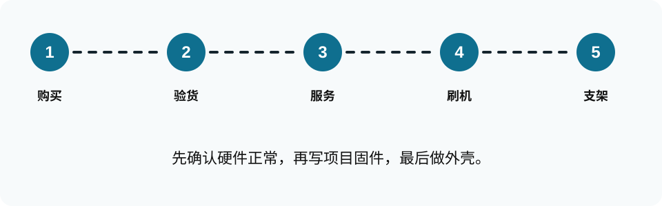
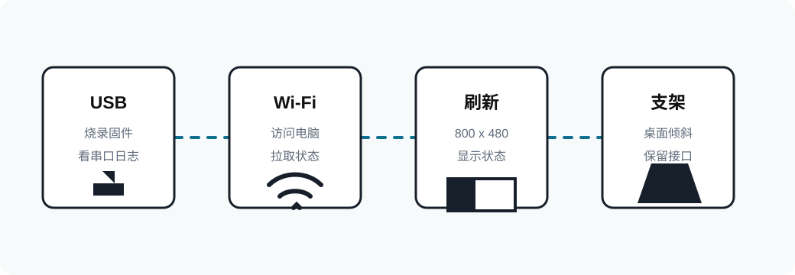
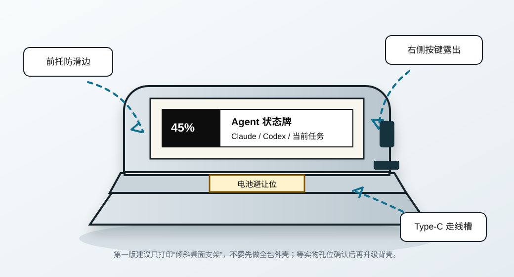

Agent 墨水屏桌面摆件实施指南
目标：用微雪 ESP32-S3-ePaper-3.97 显示 Claude Code / Codex 额度和当前任务状态。
当前硬件路线：ESP32-S3-ePaper-3.97 带锂电池版本。不要再按树莓派路线采购。
任务状态：思考中 / 执行中 / 需要操作 / 完成

0. 整体路线


先买对硬件
只围绕
ESP32-S3-ePaper-3.97 做，避免混入 RLCD 或树莓派路线。
先跑官方示例
确认屏幕、串口、Wi-Fi、电池都正常，再写项目固件。
电脑负责状态
Claude/Codex 状态由电脑端维护，屏幕通过 Wi-Fi 拉取。
1. 最终采购选择
购买这个版本：
微雪 ESP32-S3-ePaper-3.97 带锂电池版本
3.97"
电子墨水屏
800x480
横屏信息面板
ESP32-S3
Wi-Fi / BLE
锂电池
可无线摆放
| 项目 | 结论 |
|---|---|
| 主控 | ESP32-S3，内置 Wi-Fi / BLE，不需要额外通信模块。 |
| 屏幕 | 3.97 寸电子墨水屏，800 x 480，适合横向桌面状态牌。 |
| 电池 | 选择带锂电池版本，方便后续无线摆放；开发阶段仍建议插 USB。 |
| SD 卡 / 读卡器 | 第一版不需要。后续要缓存字体、图片、日志时再考虑。 |
| Type-C 线 | 你已有就不用买，但必须是能传数据的线，不只是充电线。 |
下单前确认商品标题或规格里有
ESP32-S3-ePaper-3.97，不是 ESP32-S3-RLCD-4.2。RLCD 是反射式 LCD，不是真墨水屏。
2. 到货后先做检查
先只接 USB，确认电脑能识别串口。
先跑官方示例，确认屏幕能完整刷新。
先拍照和量尺寸，最后再打印支架。
- 确认屏幕没有裂纹，排线没有明显折痕。
- 确认板子、锂电池、喇叭都在包装内。
- 先不要装外壳，不要固定胶，不要焊接额外东西。
- 用 Type-C 线接电脑，确认系统能识别 USB 串口。
- 拍正反面清晰照片，保留接口、按键、孔位位置，后续用于调整支架。
3. 本机先跑通状态服务
在你的电脑上进入项目目录：
cd /home/midea/GithubRepository/HiClaude3.1 生成演示状态
PYTHONPATH=src python3 -m agent_epaper.cli demo3.2 启动本机预览服务
PYTHONPATH=src python3 -m agent_epaper.server --host 0.0.0.0 --port 8765浏览器打开：
http://127.0.0.1:8765/
http://127.0.0.1:8765/state.json
http://127.0.0.1:8765/screen.svg3.3 更新任务状态
PYTHONPATH=src python3 -m agent_epaper.cli task \
--name "实现墨水屏桌面摆件" \
--status thinking \
--progress 35 \
--detail "正在调试 ESP32 显示端"3.4 更新额度显示
PYTHONPATH=src python3 -m agent_epaper.cli quota \
--agent claude \
--label "Claude Code" \
--used 42 \
--limit 100 \
--reset "明日 08:00"
PYTHONPATH=src python3 -m agent_epaper.cli quota \
--agent codex \
--label "Codex" \
--used 18 \
--limit 50 \
--reset "明日 08:00"
Claude Code / Codex 目前没有稳定公开的剩余额度 API。第一版先用命令或脚本写入额度；以后如果官方提供接口，再把采集器替换掉。
4. 安装官方开发环境
先按微雪官方文档跑通示例，不要一开始就刷自己的固件。目标是确认硬件、屏幕、电池、按键都正常。
- 打开微雪官方 Wiki，搜索
ESP32-S3-ePaper-3.97。 - 按官方步骤安装 Arduino IDE 或 ESP-IDF 环境。
- 安装 ESP32 board support。
- 选择正确开发板、串口和 Flash/PSRAM 配置。
- 烧录官方 ePaper 示例。
- 确认屏幕能完整刷新，并且不会一直重启。
如果官方示例都刷不动，先排查驱动、串口、线材、BOOT 模式，不要继续改本项目代码。
5. 电脑和墨水屏如何交互

最终运行结构如下：
电脑端 Python 服务
维护 state.json
提供 HTTP 接口
渲染屏幕内容
局域网 Wi-Fi
ESP32-S3 访问电脑 IP
ESP32-S3-ePaper-3.97
下载状态或图片
刷新 800 x 480 墨水屏开发阶段需要 USB 线做烧录和串口调试。正常使用时，屏幕可以用电池或 USB 供电，通过 Wi-Fi 拉取电脑状态。
6. ESP32 固件开发计划
硬件到手并跑通官方示例后，再添加本项目固件。推荐分三步做：
6.1 先连 Wi-Fi
固件写入你的 Wi-Fi 名称和密码，启动后能访问电脑的 /state.json。
6.2 再显示 JSON 文本
先不追求好看，只把任务名、状态、进度、额度几个字段画到屏幕上。
6.3 最后做完整排版
优化 800 x 480 横屏布局，加入大状态、额度条、更新时间、网络/电池状态。
为了降低 ESP32 端复杂度，优先让电脑端负责采集和排版。ESP32 端只负责联网、解析简单数据和刷屏。
7. 支架和外壳

需要 3D 打印，但第一版只打印“桌面倾斜支架”，不要直接做全包外壳。原因是全包外壳必须精确匹配螺丝孔、Type-C、按键、拨轮、电池和排线位置；你还没拿到实物前，直接做全包外壳很容易卡接口或顶到电池。
| 阶段 | 打印什么 | 为什么 |
|---|---|---|
| 第一版 | 倾斜桌面支架：前托 + 后靠 + Type-C 走线槽 + 电池避让位。 | 不依赖精确孔位，能先把设备稳定放在桌面上，看起来也不笨重。 |
| 第二版 | 薄背壳：按实物孔位固定，露出右侧按键、拨轮和 Type-C。 | 等固件和摆放角度确定后再做，避免反复打印。 |
| 不建议先做 | 全包围外壳。 | 会增加厚度，也最容易和电池、接口、散热、按键干涉。 |
当前已经新增一个 3.97 寸路线专用的第一版支架模型：
cad/waveshare_epaper_397_desk_stand.scad这个模型是通用托架，不靠螺丝孔固定。打印后设备从前方放入，底部由前托挡住，背面靠在后靠上，Type-C 线从后方走线槽出去。到货后如果发现设备宽度或厚度不合适，只需要改 OpenSCAD 顶部几个参数。
到货后仍然需要量这些尺寸，用于第二版薄背壳：
- 整板宽度和高度
- 屏幕可视区域位置
- 螺丝孔直径和孔距
- Type-C 口位置
- 电池厚度和位置
- 按键位置
8. 验收标准
- 电脑端能打开
http://127.0.0.1:8765/state.json。 - 修改任务状态后，浏览器预览能同步变化。
- 官方示例能让微雪屏幕完整刷新。
- ESP32 能连上 Wi-Fi，并访问电脑端状态接口。
- 屏幕能显示 Claude Code / Codex 额度、当前任务状态和进度。
- 断开 USB 后，电池供电能继续工作，或至少保留最后一屏。
- 支架能稳定放桌面，不遮挡 Type-C、电池和按键。
9. 当前项目文件说明
| 文件 | 用途 |
|---|---|
src/agent_epaper/cli.py |
更新任务状态和额度。 |
src/agent_epaper/server.py |
启动电脑端 HTTP 服务。 |
src/agent_epaper/render.py |
生成本机 SVG 预览。 |
cad/waveshare_epaper_397_desk_stand.scad |
3.97 寸路线的第一版桌面托架，可先打印试放。 |
assets/*.svg |
HTML 中使用的产品、流程和支架动态图示。 |
docs/ |
早期调研文档，部分内容仍提到其他硬件路线，以本 HTML 为准。 |